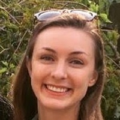
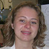

-
Jaideep Mathur
Associate Professor: Department of Molecular & Cellular Biology, University of Guelph. jmathur My fascination, for as long as I can remember, has been with ‘shapes’. My research career has thus evolved around the dissection of mechanisms underlying shape development, or morphogenesis, in plants. In 1992, after earning a Ph.D. in Botany from India I moved to the Biological Research Center, Szeged, Hungary, to investigate the molecular basis of differentiation in higher plants. Soon after I was recruited into the burgeoning field of Arabidopsis Molecular Genetics by Dr. Csaba Koncz and joined the Max-Planck Institute, Cologne, Germany under the directorship of Prof. Jeff Schell.
More » -
Neeta Mathur
My M.Sc. degree is in Zoology but for the past several years I have been working as a volunteer in Jaideep's lab. My work involves plant propagation, Agrobacterium tumefaciens mediated, or biolistic transformation of Arabidopsis as well as molecular characterization of fluorescent-protein probes and transgenic plants. Our collaborative work has resulted in several publications related to "peroxisome motility in plants", "cloning & characterization of the ARP2/3 complex and EB1-like proteins", understanding rapid sub cellular responses and organelle extensions in plants. -
Mariel Burnside
Graduate Student, M.Sc. 2020 – Project: Investigating the role of galactolipids in plastid pleomorphy. -
Laura Currie
Graduate Student, M.Sc. 2021 — Project: Investigating plastid - lipid droplet relationship during plant response to cold stress. -
Olivia Friesen Kroeker
Undergrad Researcher, B.Sc. 2021 — Project: Investigating the spatiotemporal relationship between the ER and other organelles.
Former Lab Members
-
Alexandra Smith
Summer 2020:NSERC-USRA awardee. Fall 2020 to Winter 2019 Undergraduate research project student. 2021 Undergraduate Research Assistant
Project. Cloning and characterization of fatty acid exporters and assorted genes associated with fatty acid biosynthesis in Arabidopsis. -
Mariann Lobbezoo
Winter 2018-Volunteer. Summer 2018:NSERC-USRA awardee. Fall 2018 to Winter 2019 Undergraduate research project student.Summer 2019 to Sept 2019 Undergraduate Research Assistant
Projects- 1. Cloning and characterization of several genes in the lipid biosynthetic pathway. 2. Investigations on DONGLE, a PLA1 lipase in Arabidopsis.3. Cloning of LDAP3 and investigating the role of lipid droplets in lipid homeostasis in Arabidopsis. -
Kiah Barton
Graduate Student, Ph.D.
Project 2. Investigating the subcellular basis for plastid pleomorphy.Graduated. Ph.D. 2020.
Kiah Barton won the 2014 Dr. Donald Robert Phillips Molecular Biology and Genetics Award for her academic achievements and publications. Ceremony and award lecture entitled "Modulation of organelle pleomorphy" held on June 5th, 2014. -
Cole Anderson
M.Sc. Graduate Student, Sept. 2014 to April 2015: 4th Year project student. Sept. 2015 to April 2018: Graduate student M.Sc. Project: Investigating a role for phospholipids in plastid pleomorphy. -

Kathleen Delfosse
Sept. 2016 to April 2018:Graduate Student (M.Sc) Project: Investigations of the Effects of Subcellular Sugar Levels on Plastid Morphology. Sept 2015 to April 2016: 4th year project student.
Project: Investigating the localization patterns of triose-phosphate transporters under varying levels of orthophosphates.
-
Michael Wozny
Fall 2010: Undergraduate Research Assistant
Sept 2013: Graduate student. M.Sc. Fall 2010 - Projects- 1. Understanding endo-reduplication in plant cells using fluorescent protein fusions. 2. Investigating stromule behaviour in plants.
M.Sc. Project - Understanding plastoglobuli formation in plastids.Michael's M.Sc. thesis: "Subcellular Responses of Plant Cells to Phosphate Starvation and Exogenous Sucrose Supply" — 22 December, 2015 -
Ashley Jaipargas
Graduate student. M.Sc. September 2013 - Project - Understanding peroxisome-mitochondria interactions.Ashley's M.Sc. thesis: "Investigations on Mitochondrial Pleomorphy and Interactions with the Endoplasmic Reticulum and Peroxisomes" — 24 August, 2015 -
Saloni Singh
Student, Summer 2015 — Project: Investigations on organelle-F-actin interactions in plants. April - November, 2015. -
Nailah Ramsoomair
Student, Winter 2014 — Project: Creation and Characterization of fluorescent potatoes. -
Nigel Griffiths
Volunteer — 2013 NSERC USRA 2013; RISE award to Germany Student, Summer, Fall — 2014 Undergraduate 4th year project student: "Microtubule and actin cytoskeleton interactions in plants" 4th Year project student. Sept. 2014 - April 2015. -
Alena Mammone
Graduate student. M.Sc. Project 1 - Understanding interactions between plastids, peroxisomes and mitochondria.
Project 2 - Understanding lipase activity in plastids.Alena's M.Sc. thesis: "An Investigation into Plastid Localized Lipases at Membrane Contact Sites with the Endoplasmic Reticulum using Live-Imaging" — 29 September, 2014 -
Jacqueline Fernet
Student, Summer — 2014 Undergraduate 4th year project student "Characterization of myosin behaviour in actin mutants". -
Alana Tallman
Winter, Summer Student — 2014 -
Neil Savage
Student, Summer — 2014 Undergraduate 4th year project: "Cloning and characterization of chloroplast localized lipases" -
Madhulika Sareen
Graduate student. M.Sc. May 2013 May 2011- Project- Understanding the role of the ARP2/3 complex and its upstream regulators in actin cytoskeleton mediated organization of the endoplasmic reticulum. -
Katalin Nina Barabas
Research Associate January 2012-Project- Atlas of Model Plant Cells -
Firas Bou Daher
Post Doctoral scientist February 2012 - Project- Dissecting cytoskeletal interactions during plant growth and development. -
Sarah Griffiths
Undergraduate Research Assistant Project- 2010-2012. Creation of sub-cellular targeted probes for understanding rapid responses in plants. -

Resmi Radhamony
Post Doctoral scientist:2009-2010. Project- Organelle dynamics in plant growth and development While studying for a Masters degree in molecular biology near Nainital, India I realized that lab was a fun place to be. Interest became addiction once I joined Dr Srinivasan’s lab for a PhD program where I generated and screened a promoter trap collection of Arabidopsis lines for tissue specific promoters. The project was aimed at improvement of Brassica which is one of the mandate crops at National Center for Plant Biotechnology, NewDelhi, India. As a postdoctoral fellow, I also had the opportunity to work with Prof. V.Sundaresan, University of California, Davis on analyzing flanking sequence from transposon tagged lines of rice. During my life at Davis I developed an interest in protein trafficking and worked with Prof. Steve Theg trying to quantify the energy requirement in terms of ATP currency for protein transport into chloroplast. From then on, organelle behavior and activity has been of considerable interest to me resulting in brief stints of membrane protein targeting studies in the labs of Dr. Inoue and Prof. Mullen. I joined the Mathur lab in March 2009 and since then I have been studying with great interest the vibrant activity inside living cells using multicolored fluorescent-tagged proteins and advanced microscopic tools. I am interested in using cell biology as well as genetic tools to comprehend the ongoing interaction between intracellular organelles, their role in cellular behavior and the eventual transition into plant morphogenesis in response to internal as well as environmental cues. -
Mike Schenkel
Graduate Student: Project: Live cell imaging of the dehydration/rehydration stress response exhibited by the desiccation tolerant moss Tortula ruralis.Co-Supervisors: Profs. Derek Bewley & Jaideep Mathur
After completing a 3-year degree in Biotechnology at Seneca College, I decided to come to Guelph to develop my understanding of molecular and cellular biology. While working on an undergraduate research project in Molecular Biology and Genetics, I developed a profound interest in molecular processes and signal transduction research.
I joined the Mathur lab to complete a M.Sc. because of the focus the lab places on studying fundamental cellular biology using highly advanced tools.
My research is centered on live cell imaging by utilizing fluorescent probes and cutting edge microscopy technologies. Currently, I am studying the dynamics of key cellular components involved in the desiccation tolerant bryophyte Tortula ruralis during dehydration / rehydration states.- * Visualizing the actin cytoskeleton in living plant cells using a photo-convertible mEos::FABD-mTn fluorescent fusion protein. Mike Schenkel , Alison M Sinclair , Daniel Johnstone , J Derek Bewley and Jaideep Mathur. PLANT METHODS. 4: 21:2008.
- * Signaling to the Actin Cytoskeleton during cell morphogenesis and patterning: A. Sinclair, M. Schenkel & J. Mathur. 2009.In: Signaling and Communication in Plants. Baluska & Mancuso (Eds). Springer Verlag.
-

Natalie Dunn
Undergraduate Student: Project- Linking Ultrastructural and live-imaging for understanding exocytosis - endocytosis in plants While presently completing my undergraduate studies in Plant Biotechnology at the University of Guelph, I have joined the Mathur lab in May 2009 for a lab research project. The numerous plant, cellular, and molecular courses that I have completed during the last few years have made it possible for me to join this lab and gain experience in live-imaging of plants. My research focuses on understanding exocytosis/endocytosis mechanisms during plant growth and development. The work involves Arabidopsis mutants of the "distorted trichome" class. The majority of my studies involve the use of electron microscopy to observe ultrastructural components of cells as well as confocal microscopy to acquire corresponding time-lapse images of organelles highlighted using different fluorescent protein probes. -
Elyse Roach
Undergraduate Student: Project- Stress instigated Organelle responses and Interactions in plants In 2006 I began my undergraduate degree, here at the University of Guelph, studying Microbiology, and am currently entering my fourth year of study. Although my focus of study is microbes, my interest was drawn to plants in my third year when I had decided to take a few botany courses, including Plant Phisiology, a course instructed by Dr. Jaideep Mathur and Dr. Joseph Colasanti. Through the course of the semester we studied a myriad of Arabidopsis thaliana mutants and my interest grew. I am now working through the summer, using advanced molecular and cell biological tools, to assist in classifying the rapid and relative responses of peroxisomes and mitochondria to oxidative stress, and will continue this in the winter semester of 2010 in my fourth year research project. -
Ana Donoso
Undergraduate Student: Project- Physiological dissection of ARP2/3 complex mutants of Arabidopsis thaliana I joined the Mathur lab in 2008 soon after taking a course on Plant growth and development. My work focuses on the analysis of different Arabidopsis thaliana mutants in the actin regulating ARP2/3 complex. I combine genetic studies on the mutants with physiological observations involving nutrient status and growth regulator effects. I am also involved in creating new sub-cellular targeted live-imaging probes for plants. -
Ksenija Kokolic
Undergraduate Student: Project- Understanding Microtubule-microfilament interactions in plants I am a volunteer in the Mathur lab for the summer 2009 and am interested in understanding microtubule-actin microfilament interactions during plant cell growth and morphogenesis. My studies involve the temperature sensitive "mor1" mutant of Arabidopsis and the use of fluorescent proteins targeted to cytoskeletal elements. -
Colin Wood
Undergraduate 4th yr project student Project- Understanding auxin mediation in actin organization. -
Julia Rudderham
Undergraduate 4th yr project StudentProject- Understanding ROS mediated subcellular interactions in plants. -
Martin H Schattat
Post Doctoral ScientistProject- Mechanisms related to formation and behaviour of Stromules. September 2010 to December 2011. -
Daniel Johnstone
Undergraduate Studen NSERC USRAtProject- Developing photoconvertible Eos fluorescent protein for use in plants. -
Devon Radford
Undergraduate Student NSERC USRA Project- Using EosFP in plants. -
Adam Agate
Undergraduate Student volunteer 2011. -
Krishna Chintaluri
Undergraduate Student volunteer 2011. -
Rameez Imtiaz
Undergraduate Student volunteer 2011. -
Sylvester Dorobis
Undergraduate Student volunteer 2011. -
Alison Sinclair
Graduate Student May 2005 - Feb 2009. Project-Proof of concept studies for rapid intracellular responses in plants. -
Sujitha Muthuswamy
Graduate Student Project- Understanding Microtubule-microfilament interactions during plant cell morphogenesis.